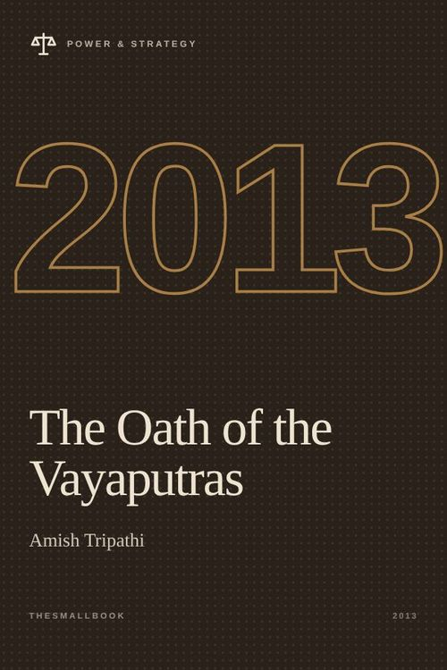

Why Did The Kurukshetra War Fail?
The War Everyone Wanted That Destroyed Everyone Who Wanted It
📜 What Happened
The Mahabharata's war was not a surprise - it was a plan. Both sides spent years preparing, every warrior knew it was coming, and every elder - Bhishma, Drona, Vidura, Krishna - knew the price. The war lasted eighteen days and consumed the entire generation: the Pandavas won, and the victory was a funeral. Every woman in Hastinapur and Indraprastha became a widow; every warrior's family lost a son; the heirs - the five sons of the Pandavas and all hundred Kauravas - died. The victors inherited a kingdom of ashes and a guilt that never lifted. The epic's own arithmetic is the lesson: war is the only business where even the winners describe the outcome as defeat.
☠️ The Fatal Mistake
Both sides chose war because neither side was willing to lose face by stopping - the war was optional at every single step.
🧠 The Lesson (Free for You)
The Kurukshetra test for any conflict: is this war optional? In the epic, peace was offered at every stage - five villages, one kingdom, one apology - and refused every time because both sides preferred 'winning' to 'not fighting'. The cost of the refusal was the generation itself. Before you escalate any conflict - a legal battle, a price war, a family feud - ask what the victory is worth and whether the war, like Kurukshetra, will leave you the winner of a graveyard.
The Antidote Book

The finale of the Shiva Trilogy brings every thread together: Shiva must decide whether to fight the final war against the evil Emperor Daksha, knowing the war itself may be part of a larger design. The book's core…
📖 OPEN THE FULL INTERACTIVE BREAKDOWN →Questions people ask about The Kurukshetra War
Why did The Kurukshetra War fail? Both sides chose war because neither side was willing to lose face by stopping - the war was optional at every single step.
How much was lost? 18 days, millions dead - every family on both sides lost someone irreplaceable
What is the lesson? The Kurukshetra test for any conflict: is this war optional? In the epic, peace was offered at every stage - five villages, one kingdom, one apology - and refused every time because both sides preferred 'winning' to 'not fighting'. The cost of the refusal was the generation itself. Before you escalate any conflict - a legal battle, a price war, a family feud - ask what the victory is worth and whether the war, like Kurukshetra, will leave you the winner of a graveyard.
The Kurukshetra War kyun fail hua? In simple English: Both sides chose war because neither side was willing to lose face by stopping - the war was optional at every single step. The cost was 18 days, millions dead - every family on both sides lost someone irreplaceable.
Keep digging
More historical failures · Open the full Graveyard
Read the antidote book summary: The Oath of the Vayaputras
Related failures
- Why did The Churning of the Ocean fail? ~5000 BCE (epic) · The Great Co-operation That Produced the Poison First
- Why did The Nanda Empire fail? ~321 BCE · The Richest Empire in India, Lost Because the King Couldn't Keep a Promise
- Why did The Harappan Collapse fail? ~1900 BCE · The Advanced Civilization That Vanished Into Its Own Success
- Why did Easter Island fail? ~1600 · They Cut Down the Last Tree
- Why did Qin Shi Huang fail? 210 BC · The Emperor Who Drank Immortality to Death
- Why did Alitalia fail? 2021 · The flag carrier is replaced
Questions people ask about The Kurukshetra War
Why did The Kurukshetra War fail? Both sides chose war because neither side was willing to lose face by stopping - the war was optional at every single step.
How much was lost? 18 days, millions dead - every family on both sides lost someone irreplaceable
What is the lesson? The Kurukshetra test for any conflict: is this war optional? In the epic, peace was offered at every stage - five villages, one kingdom, one apology - and refused every time because both sides preferred 'winning' to 'not fighting'. The cost of the refusal was the generation itself. Before you escalate any conflict - a legal battle, a price war, a family feud - ask what the victory is worth and whether the war, like Kurukshetra, will leave you the winner of a graveyard.
The Kurukshetra War kyun fail hua? In simple English: Both sides chose war because neither side was willing to lose face by stopping - the war was optional at every single step. The cost was 18 days, millions dead - every family on both sides lost someone irreplaceable.
Keep digging
More historical failures · Open the full Graveyard
Read the antidote book summary: The Oath of the Vayaputras
Related failures
- Why did The Churning of the Ocean fail? ~5000 BCE (epic) · The Great Co-operation That Produced the Poison First
- Why did The Nanda Empire fail? ~321 BCE · The Richest Empire in India, Lost Because the King Couldn't Keep a Promise
- Why did The Harappan Collapse fail? ~1900 BCE · The Advanced Civilization That Vanished Into Its Own Success
- Why did Easter Island fail? ~1600 · They Cut Down the Last Tree
- Why did Qin Shi Huang fail? 210 BC · The Emperor Who Drank Immortality to Death
- Why did The Twentieth Year: The Fall of Kabul, 2021 fail? 2021 · Twenty Years, One Runway
Searchable, filterable, simple to read - they paid billions; you get the lesson.